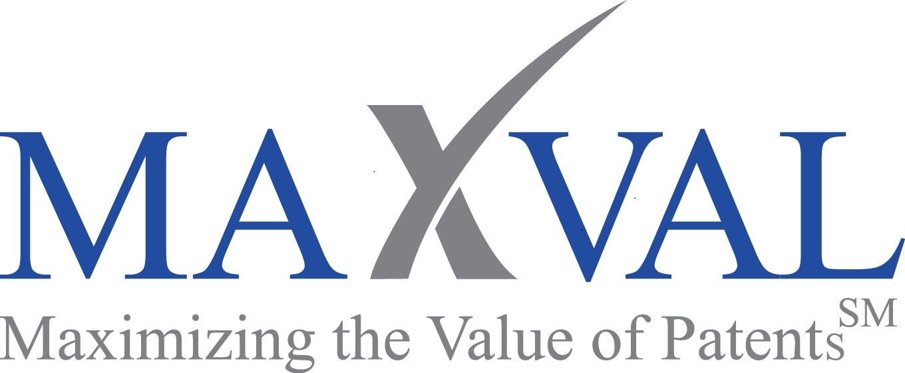

MAXVAL:
Maxval IP Ventures Pvt Ltd
OUR GUIDING PRINCIPLES
•Help our clients manage their intellectual property related challenges.
•Provide cost-effective solutions of the highest quality to our clients.
•Have fun in working with our clients.
The above principles guide our talented team of dedicated and committed professionals (patent
attorneys, patent agents, patent specialists, paralegals, database services specialists, software
development specialists, quality assurance specialists and support staff) deliver extraordinary
customer service to our clients.
OUR FOCUS
MaxVal Group provides technology enabled solutions and expert services. We partner with
patent counsel and patent operations teams to optimize patent lifecycle management with high
levels of customer service.
Our clients use our solutions to reduce risks, costs and inefficiencies by streamlining operations,
improve top-line by assisting with effective patent portfolio management, and gain and maintain
market leadership through competitive intelligence.
HISTORY
Founded in 2004 by a patent attorney to serve in-house counsel and patent operations, we
specialize in patent lifecycle management. Currently over 115 people with patent attorneys,
patent agents, software developers and database experts. Headquartered in Silicon Valley with
offices in Coimbatore and Chennai, India.
FOUNDER AND CEO - D. Bommi Bommannan, PhD (UCB/UCSF), JD (Stanford)
Bommi founded MaxVal in 2004 to help companies optimize the management of patent lifecycle
and maximize the value of their patents. His initial efforts in monetizing patents in the life
sciences arena has led to a sophisticated approach at MaxVal for processing patent portfolios in
various sectors for monetization. Bommi has assembled a talented team that operates out of the
U.S. and India to develop high quality, cost-effective solutions for patent groups.
Bommi’s patent experience started as inventor while a graduate student, then becoming a
patent agent at his job as a research scientist, followed by various stints at the Bay area’s many
prestigious law firms such Morrison Foerster, Cooley Godward, and Thelen Reid & Priest and
in-house at companies like Alza. Bommi’s exposure to patent practice at law firms and in-house
has given him a unique perspective that has laid the foundation for many of the solutions offered
by MaxVal.
Before founding MaxVal, Bommi was the CEO at NTERO Surgical, Inc., a medical device
company that he co-founded with support from Menlo Ventures, where he learned to handle the
challenges of raising capital, assembling a top notch team and developing products.
Bommi’s work experience includes research and management positions at Merck, Cygnus, and
Alza. He is an inventor on more than 20 patents and has published more than 50 articles in
scientific journals. He received his Ph.D. in Bioengineering from a joint program between UCSF
and UC, Berkeley and his law degree (JD) from Stanford Law School (Order of the Coif). He is a
registered patent attorney (USPTO and California).
http://www.maxval.com